Last updated: 2025-03-09
Checks: 7 0
Knit directory: misc/analysis/
This reproducible R Markdown analysis was created with workflowr (version 1.7.1). The Checks tab describes the reproducibility checks that were applied when the results were created. The Past versions tab lists the development history.
Great! Since the R Markdown file has been committed to the Git repository, you know the exact version of the code that produced these results.
Great job! The global environment was empty. Objects defined in the global environment can affect the analysis in your R Markdown file in unknown ways. For reproduciblity it’s best to always run the code in an empty environment.
The command set.seed(1) was run prior to running the
code in the R Markdown file. Setting a seed ensures that any results
that rely on randomness, e.g. subsampling or permutations, are
reproducible.
Great job! Recording the operating system, R version, and package versions is critical for reproducibility.
Nice! There were no cached chunks for this analysis, so you can be confident that you successfully produced the results during this run.
Great job! Using relative paths to the files within your workflowr project makes it easier to run your code on other machines.
Great! You are using Git for version control. Tracking code development and connecting the code version to the results is critical for reproducibility.
The results in this page were generated with repository version 2cfe5b8. See the Past versions tab to see a history of the changes made to the R Markdown and HTML files.
Note that you need to be careful to ensure that all relevant files for
the analysis have been committed to Git prior to generating the results
(you can use wflow_publish or
wflow_git_commit). workflowr only checks the R Markdown
file, but you know if there are other scripts or data files that it
depends on. Below is the status of the Git repository when the results
were generated:
Ignored files:
Ignored: .DS_Store
Ignored: .Rhistory
Ignored: .Rproj.user/
Ignored: analysis/.RData
Ignored: analysis/.Rhistory
Ignored: analysis/ALStruct_cache/
Ignored: data/.Rhistory
Ignored: data/methylation-data-for-matthew.rds
Ignored: data/pbmc/
Ignored: data/pbmc_purified.RData
Untracked files:
Untracked: .dropbox
Untracked: Icon
Untracked: analysis/GHstan.Rmd
Untracked: analysis/GTEX-cogaps.Rmd
Untracked: analysis/PACS.Rmd
Untracked: analysis/Rplot.png
Untracked: analysis/SPCAvRP.rmd
Untracked: analysis/abf_comparisons.Rmd
Untracked: analysis/admm_02.Rmd
Untracked: analysis/admm_03.Rmd
Untracked: analysis/bispca.Rmd
Untracked: analysis/cache/
Untracked: analysis/cholesky.Rmd
Untracked: analysis/compare-transformed-models.Rmd
Untracked: analysis/cormotif.Rmd
Untracked: analysis/cp_ash.Rmd
Untracked: analysis/eQTL.perm.rand.pdf
Untracked: analysis/eb_prepilot.Rmd
Untracked: analysis/eb_var.Rmd
Untracked: analysis/ebpmf1.Rmd
Untracked: analysis/ebpmf_sla_text.Rmd
Untracked: analysis/ebspca_sims.Rmd
Untracked: analysis/explore_psvd.Rmd
Untracked: analysis/fa_check_identify.Rmd
Untracked: analysis/fa_iterative.Rmd
Untracked: analysis/flash_cov_overlapping_groups_init.Rmd
Untracked: analysis/flash_test_tree.Rmd
Untracked: analysis/flashier_newgroups.Rmd
Untracked: analysis/flashier_nmf_triples.Rmd
Untracked: analysis/flashier_pbmc.Rmd
Untracked: analysis/flashier_snn_shifted_prior.Rmd
Untracked: analysis/greedy_ebpmf_exploration_00.Rmd
Untracked: analysis/ieQTL.perm.rand.pdf
Untracked: analysis/lasso_em_03.Rmd
Untracked: analysis/m6amash.Rmd
Untracked: analysis/mash_bhat_z.Rmd
Untracked: analysis/mash_ieqtl_permutations.Rmd
Untracked: analysis/methylation_example.Rmd
Untracked: analysis/mixsqp.Rmd
Untracked: analysis/mr.ash_lasso_init.Rmd
Untracked: analysis/mr.mash.test.Rmd
Untracked: analysis/mr_ash_modular.Rmd
Untracked: analysis/mr_ash_parameterization.Rmd
Untracked: analysis/mr_ash_ridge.Rmd
Untracked: analysis/mv_gaussian_message_passing.Rmd
Untracked: analysis/nejm.Rmd
Untracked: analysis/nmf_bg.Rmd
Untracked: analysis/nonneg_underapprox.Rmd
Untracked: analysis/normal_conditional_on_r2.Rmd
Untracked: analysis/normalize.Rmd
Untracked: analysis/pbmc.Rmd
Untracked: analysis/pca_binary_weighted.Rmd
Untracked: analysis/pca_l1.Rmd
Untracked: analysis/poisson_nmf_approx.Rmd
Untracked: analysis/poisson_shrink.Rmd
Untracked: analysis/poisson_transform.Rmd
Untracked: analysis/qrnotes.txt
Untracked: analysis/ridge_iterative_02.Rmd
Untracked: analysis/ridge_iterative_splitting.Rmd
Untracked: analysis/samps/
Untracked: analysis/sc_bimodal.Rmd
Untracked: analysis/shrinkage_comparisons_changepoints.Rmd
Untracked: analysis/susie_cov.Rmd
Untracked: analysis/susie_en.Rmd
Untracked: analysis/susie_z_investigate.Rmd
Untracked: analysis/svd-timing.Rmd
Untracked: analysis/temp.RDS
Untracked: analysis/temp.Rmd
Untracked: analysis/test-figure/
Untracked: analysis/test.Rmd
Untracked: analysis/test.Rpres
Untracked: analysis/test.md
Untracked: analysis/test_qr.R
Untracked: analysis/test_sparse.Rmd
Untracked: analysis/tree_dist_top_eigenvector.Rmd
Untracked: analysis/z.txt
Untracked: code/multivariate_testfuncs.R
Untracked: code/rqb.hacked.R
Untracked: data/4matthew/
Untracked: data/4matthew2/
Untracked: data/E-MTAB-2805.processed.1/
Untracked: data/ENSG00000156738.Sim_Y2.RDS
Untracked: data/GDS5363_full.soft.gz
Untracked: data/GSE41265_allGenesTPM.txt
Untracked: data/Muscle_Skeletal.ACTN3.pm1Mb.RDS
Untracked: data/P.rds
Untracked: data/Thyroid.FMO2.pm1Mb.RDS
Untracked: data/bmass.HaemgenRBC2016.MAF01.Vs2.MergedDataSources.200kRanSubset.ChrBPMAFMarkerZScores.vs1.txt.gz
Untracked: data/bmass.HaemgenRBC2016.Vs2.NewSNPs.ZScores.hclust.vs1.txt
Untracked: data/bmass.HaemgenRBC2016.Vs2.PreviousSNPs.ZScores.hclust.vs1.txt
Untracked: data/eb_prepilot/
Untracked: data/finemap_data/fmo2.sim/b.txt
Untracked: data/finemap_data/fmo2.sim/dap_out.txt
Untracked: data/finemap_data/fmo2.sim/dap_out2.txt
Untracked: data/finemap_data/fmo2.sim/dap_out2_snp.txt
Untracked: data/finemap_data/fmo2.sim/dap_out_snp.txt
Untracked: data/finemap_data/fmo2.sim/data
Untracked: data/finemap_data/fmo2.sim/fmo2.sim.config
Untracked: data/finemap_data/fmo2.sim/fmo2.sim.k
Untracked: data/finemap_data/fmo2.sim/fmo2.sim.k4.config
Untracked: data/finemap_data/fmo2.sim/fmo2.sim.k4.snp
Untracked: data/finemap_data/fmo2.sim/fmo2.sim.ld
Untracked: data/finemap_data/fmo2.sim/fmo2.sim.snp
Untracked: data/finemap_data/fmo2.sim/fmo2.sim.z
Untracked: data/finemap_data/fmo2.sim/pos.txt
Untracked: data/logm.csv
Untracked: data/m.cd.RDS
Untracked: data/m.cdu.old.RDS
Untracked: data/m.new.cd.RDS
Untracked: data/m.old.cd.RDS
Untracked: data/mainbib.bib.old
Untracked: data/mat.csv
Untracked: data/mat.txt
Untracked: data/mat_new.csv
Untracked: data/matrix_lik.rds
Untracked: data/paintor_data/
Untracked: data/running_data_chris.csv
Untracked: data/running_data_matthew.csv
Untracked: data/temp.txt
Untracked: data/y.txt
Untracked: data/y_f.txt
Untracked: data/zscore_jointLCLs_m6AQTLs_susie_eQTLpruned.rds
Untracked: data/zscore_jointLCLs_random.rds
Untracked: explore_udi.R
Untracked: output/fit.k10.rds
Untracked: output/fit.nn.pbmc.purified.rds
Untracked: output/fit.nn.rds
Untracked: output/fit.nn.s.001.rds
Untracked: output/fit.nn.s.01.rds
Untracked: output/fit.nn.s.1.rds
Untracked: output/fit.nn.s.10.rds
Untracked: output/fit.snn.s.001.rds
Untracked: output/fit.snn.s.01.nninit.rds
Untracked: output/fit.snn.s.01.rds
Untracked: output/fit.varbvs.RDS
Untracked: output/fit2.nn.pbmc.purified.rds
Untracked: output/glmnet.fit.RDS
Untracked: output/snn07.txt
Untracked: output/snn34.txt
Untracked: output/test.bv.txt
Untracked: output/test.gamma.txt
Untracked: output/test.hyp.txt
Untracked: output/test.log.txt
Untracked: output/test.param.txt
Untracked: output/test2.bv.txt
Untracked: output/test2.gamma.txt
Untracked: output/test2.hyp.txt
Untracked: output/test2.log.txt
Untracked: output/test2.param.txt
Untracked: output/test3.bv.txt
Untracked: output/test3.gamma.txt
Untracked: output/test3.hyp.txt
Untracked: output/test3.log.txt
Untracked: output/test3.param.txt
Untracked: output/test4.bv.txt
Untracked: output/test4.gamma.txt
Untracked: output/test4.hyp.txt
Untracked: output/test4.log.txt
Untracked: output/test4.param.txt
Untracked: output/test5.bv.txt
Untracked: output/test5.gamma.txt
Untracked: output/test5.hyp.txt
Untracked: output/test5.log.txt
Untracked: output/test5.param.txt
Unstaged changes:
Modified: .gitignore
Modified: analysis/flashier_log1p.Rmd
Modified: analysis/flashier_sla_text.Rmd
Modified: analysis/logistic_z_scores.Rmd
Modified: analysis/mr_ash_pen.Rmd
Modified: analysis/nmu_em.Rmd
Modified: analysis/susie_flash.Rmd
Note that any generated files, e.g. HTML, png, CSS, etc., are not included in this status report because it is ok for generated content to have uncommitted changes.
These are the previous versions of the repository in which changes were
made to the R Markdown (analysis/nmf_simple_examples.Rmd)
and HTML (docs/nmf_simple_examples.html) files. If you’ve
configured a remote Git repository (see ?wflow_git_remote),
click on the hyperlinks in the table below to view the files as they
were in that past version.
| File | Version | Author | Date | Message |
|---|---|---|---|---|
| Rmd | 2cfe5b8 | Matthew Stephens | 2025-03-09 | workflowr::wflow_publish("analysis/nmf_simple_examples.Rmd") |
| html | d2a32e8 | Matthew Stephens | 2020-10-13 | Build site. |
| Rmd | 3304a12 | Matthew Stephens | 2020-10-13 | workflowr::wflow_publish("nmf_simple_examples.Rmd") |
| html | 40bc193 | Matthew Stephens | 2020-10-13 | Build site. |
| Rmd | 051454d | Matthew Stephens | 2020-10-13 | workflowr::wflow_publish("nmf_simple_examples.Rmd") |
| html | ef937bb | Matthew Stephens | 2020-10-09 | Build site. |
| Rmd | 170c0bc | Matthew Stephens | 2020-10-09 | workflowr::wflow_publish("nmf_simple_examples.Rmd") |
library(NNLM) # library(devtools); install_github('linxihui/NNLM')
library("flashier")Loading required package: ebnmLoading required package: magrittrlibrary("magrittr")I wanted to try some simple non-negative covariance examples, to assess challenges of getting convergence.
I set up a covariance matrix with 3 factors (columns of L). I add some very small noise.
set.seed(123)
L= matrix(0,nrow=100,ncol=3)
L[1:50,1] = 1
L[51:100,2] = 1
L[26:75,3] = 1
S = L %*% t(L) + rnorm(100*100,0,0.01)
image(S)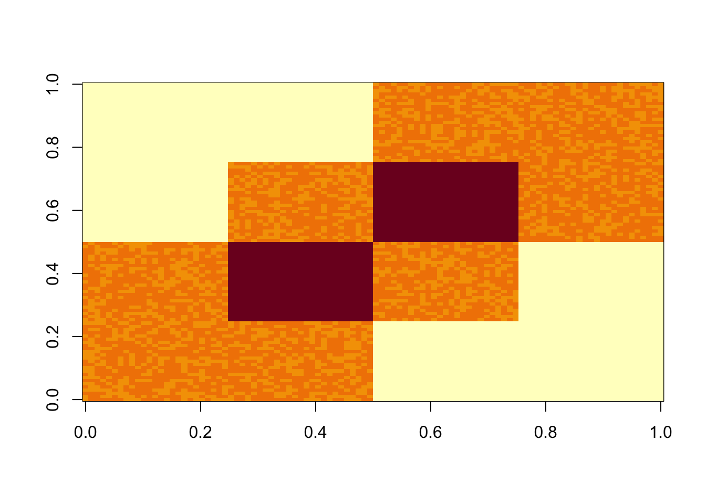
| Version | Author | Date |
|---|---|---|
| ef937bb | Matthew Stephens | 2020-10-09 |
Start with svd: you can see the PCs kind of pick up the three factors, although not exactly of course (SVD is not non-negative….) So this should be a relatively easy case.
S.svd = svd(S)
par(mfcol=c(1,3))
plot(S.svd$u[,1],main='first eigenvector')
plot(S.svd$u[,2],main='second eigenvector')
plot(S.svd$u[,3],main='third eigenvector')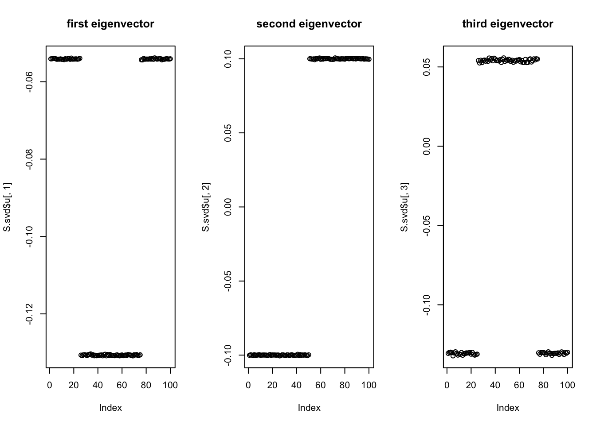
| Version | Author | Date |
|---|---|---|
| ef937bb | Matthew Stephens | 2020-10-09 |
Try non-negative matrix factorization. It works well here.
S.nnmf = nnmf(S,k=3)
par(mfcol=c(1,3))
plot(S.nnmf$W[,1])
plot(S.nnmf$W[,2])
plot(S.nnmf$W[,3])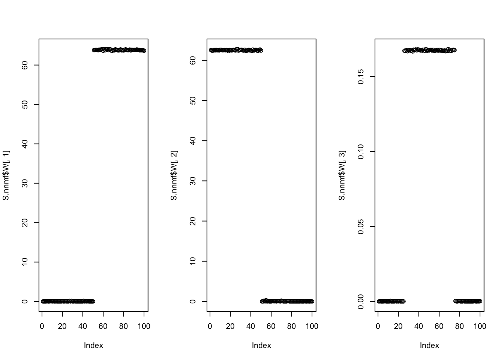
| Version | Author | Date |
|---|---|---|
| ef937bb | Matthew Stephens | 2020-10-09 |
Now I do 9 non-negative factors, each having 20 positive entries (out of 100).
K=9
set.seed(1)
L2 = matrix(0,nrow=100,ncol=K)
for(i in 1:K){L2[sample(1:100,20),i]=1}
S2 = L2 %*% t(L2) +rnorm(100*100,0,0.01)
image(S2)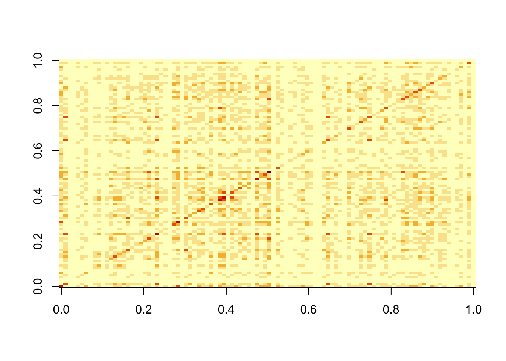
| Version | Author | Date |
|---|---|---|
| ef937bb | Matthew Stephens | 2020-10-09 |
Do svd. We see the rank 10 structure clearly, but the actual factors are clearly now all mixed up among the PCs.
S2.svd = svd(S2)
plot(S2.svd$d[1:30],main="eigenvalues")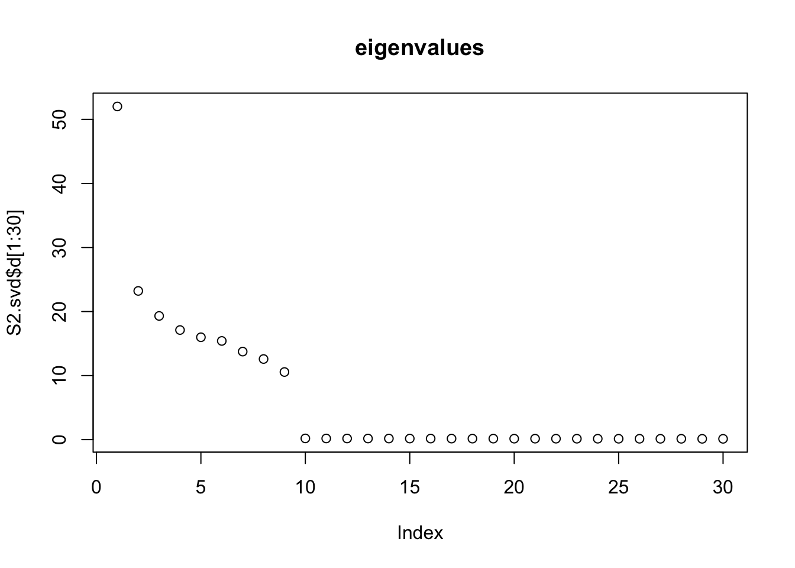
| Version | Author | Date |
|---|---|---|
| ef937bb | Matthew Stephens | 2020-10-09 |
par(mfcol=c(1,3))
plot(S2.svd$u[,1],main='first eigenvector')
plot(S2.svd$u[,2],main='second eigenvector')
plot(S2.svd$u[,3],main='third eigenvector')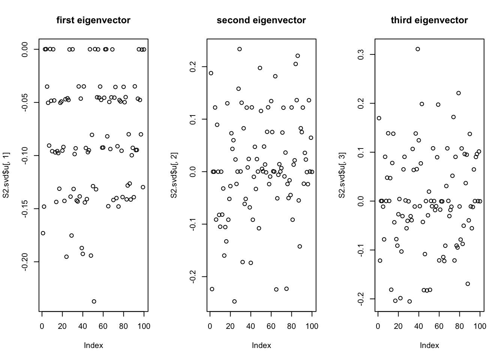
| Version | Author | Date |
|---|---|---|
| ef937bb | Matthew Stephens | 2020-10-09 |
NMF – slightly suprisingly to me it looks great! (I did give it the right K)
S2.nnmf = nnmf(S2,k=K)
# for each column of W find the best matching column in L
get_bestmatch = function(L,W){
LW.c = (cor(L,W)) # finds correlation between columns of L and W
bestmatch = rep(0, ncol(W))
for(i in 1:ncol(W)){
bestmatch[i] = which.max(LW.c[,i])
}
return(bestmatch)
}
bm = get_bestmatch(L2,S2.nnmf$W)
par(mfcol=c(3,3),mai=rep(0.25,4))
for(i in 1:K){
plot(L2[,bm[i]],S2.nnmf$W[,i], main="True L vs Estimate")
}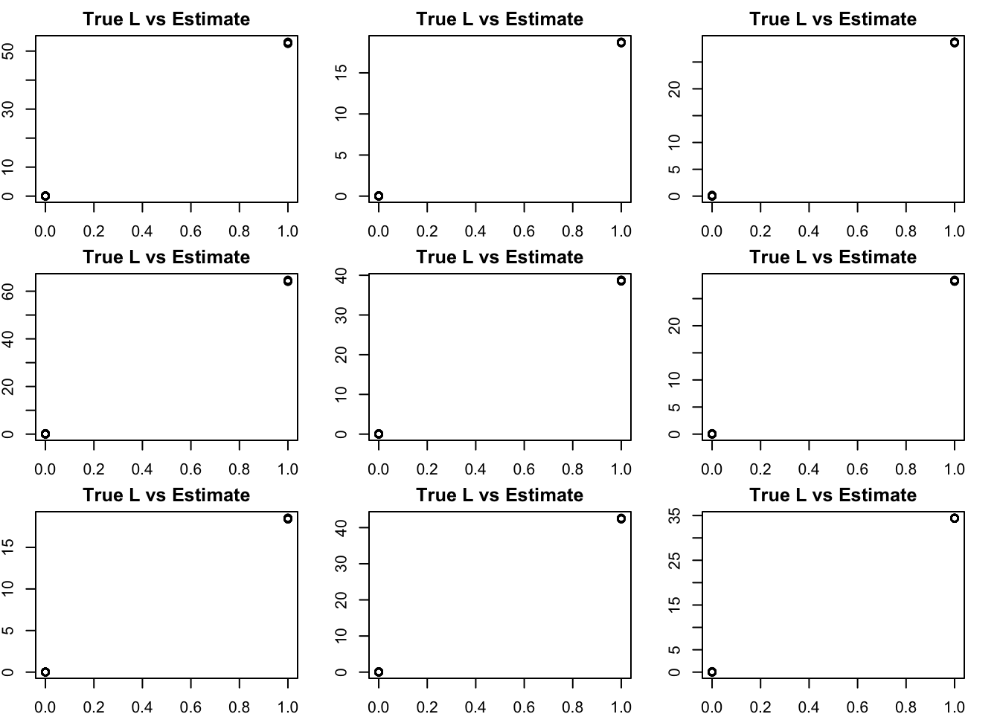
| Version | Author | Date |
|---|---|---|
| ef937bb | Matthew Stephens | 2020-10-09 |
Try adding some noise and running NMF. Now the results are (as expected) less clean.
S2n = S2+rnorm(100*100,0,1)
S2n.nnmf = nnmf(S2n,k=K)
bm = get_bestmatch(L2,S2n.nnmf$W)
par(mfcol=c(3,3),mai=rep(0.25,4))
for(i in 1:K){
plot(L2[,bm[i]],S2n.nnmf$W[,i], main="True L vs Estimate")
}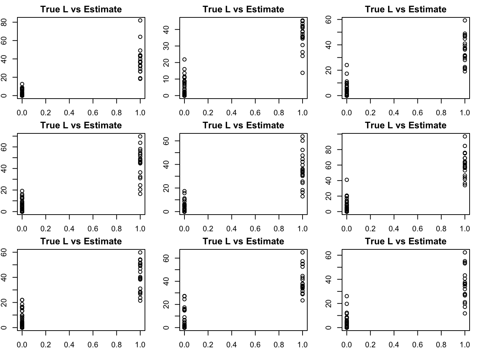
| Version | Author | Date |
|---|---|---|
| ef937bb | Matthew Stephens | 2020-10-09 |
Here I see if I can improve performance by using EB shrinkage methods. (Could also try penalties?). In this one I just use a non-negative prior (not 0-1).
S2n.f <- flash_init(S2n) %>% flash_factors_init(list(S2n.nnmf$W,t(S2n.nnmf$H)),ebnm_fn = ebnm_point_exponential) %>% flash_backfit()Backfitting 9 factors (tolerance: 1.49e-04)...
Difference between iterations is within 1.0e+01...
Difference between iterations is within 1.0e+00...
Difference between iterations is within 1.0e-01...
Difference between iterations is within 1.0e-02...
Difference between iterations is within 1.0e-03...
Difference between iterations is within 1.0e-04...
Wrapping up...
Done.par(mfcol=c(3,3),mai=rep(0.25,4))
for(i in 1:K){
plot(L2[,bm[i]],S2n.f$L_pm[,i], main="True L vs Estimate")
}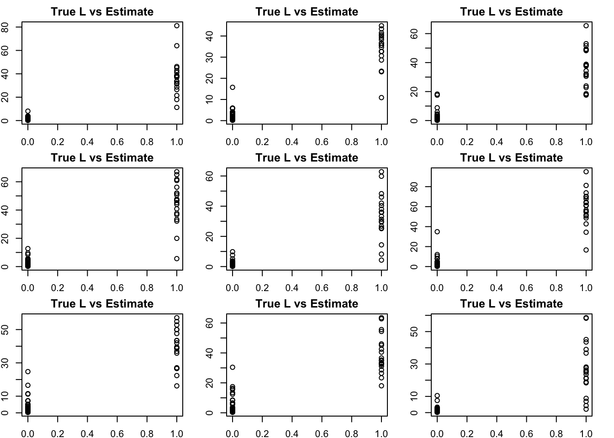
Here I check whether the EB shrinkage improves the correlations between the true values and the estimates:
cors = matrix(nrow=K, ncol=2)
colnames(cors) = c("flash","nnmf")
for(i in 1:K){
cors[i,] = (c(cor(L2[,bm[i]],S2n.f$L_pm[,i]), cor(L2[,bm[i]],S2n.nnmf$W[,i])))
}
print(cors,digits=2) flash nnmf
[1,] 0.91 0.91
[2,] 0.93 0.92
[3,] 0.92 0.90
[4,] 0.96 0.94
[5,] 0.89 0.90
[6,] 0.90 0.89
[7,] 0.91 0.92
[8,] 0.94 0.93
[9,] 0.82 0.88We have found some challenges with tree-like case, so we try that here. This simulates a symmetric 4-tip tree (6 branches total), with a factor for each branch.
set.seed(1)
L3 = matrix(0,nrow=100,ncol=6)
L3[1:50,1] = 1 #top split L
L3[51:100,2] = 1 # top split R
L3[1:25,3] = 1
L3[26:50,4] = 1
L3[51:75,5] = 1
L3[76:100,6] = 1
S3 = L3 %*% t(L3) +rnorm(100*100,0,0.01)
image(S3)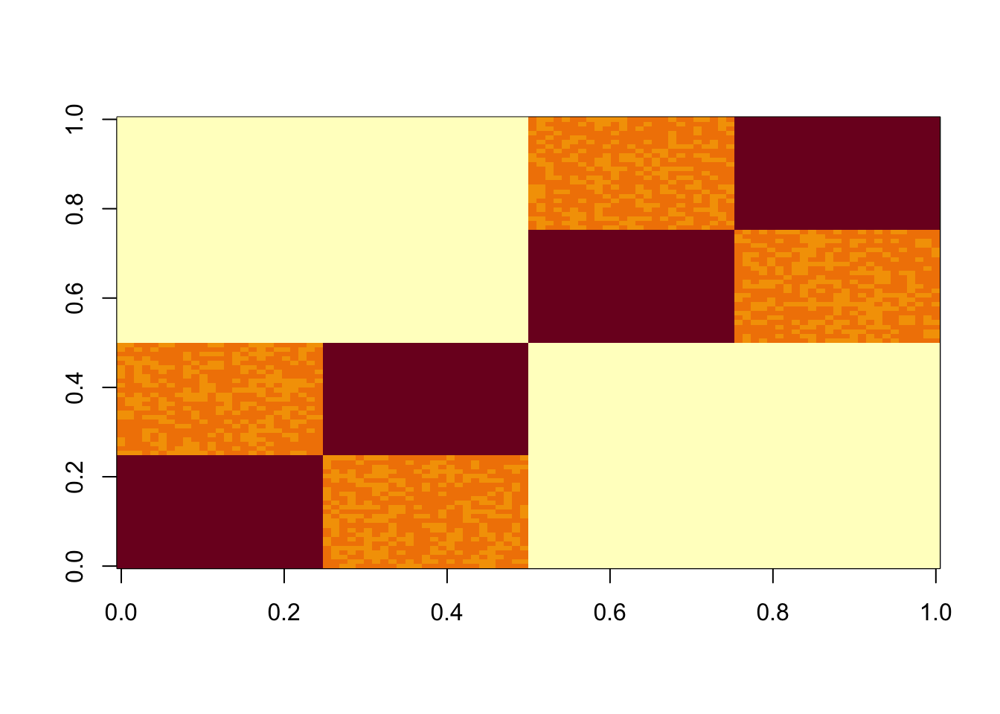
| Version | Author | Date |
|---|---|---|
| 40bc193 | Matthew Stephens | 2020-10-13 |
The results confirm that finding the representation that we want (in which each factor represents a branch) is not achieved by off-the-shelf methods. This is essentially because many factors (in the branch representation) are linearly dependent with one another; indeed I believe there effectively exists a rank 4 nmf solution to this data. An open question is whether using a binary prior can give us the tree result.
S3.nnmf = nnmf(S3,k=7)
par(mfcol=c(3,3),mai=rep(0.25,4))
for(i in 1:7){
plot(S3.nnmf$W[,i])
}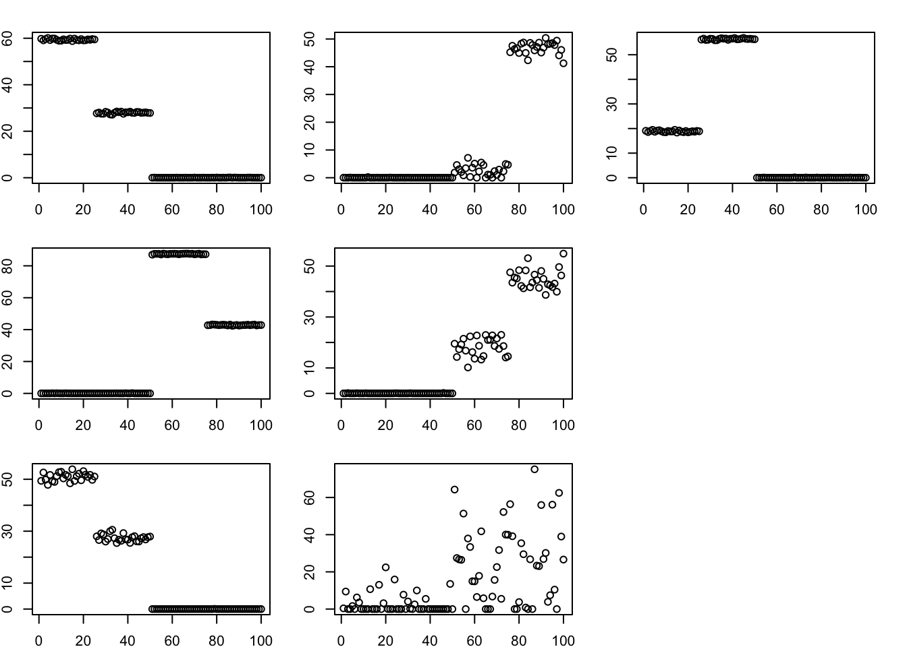
| Version | Author | Date |
|---|---|---|
| 40bc193 | Matthew Stephens | 2020-10-13 |
sessionInfo()R version 4.4.2 (2024-10-31)
Platform: aarch64-apple-darwin20
Running under: macOS Sequoia 15.3.1
Matrix products: default
BLAS: /Library/Frameworks/R.framework/Versions/4.4-arm64/Resources/lib/libRblas.0.dylib
LAPACK: /Library/Frameworks/R.framework/Versions/4.4-arm64/Resources/lib/libRlapack.dylib; LAPACK version 3.12.0
locale:
[1] en_US.UTF-8/en_US.UTF-8/en_US.UTF-8/C/en_US.UTF-8/en_US.UTF-8
time zone: America/Chicago
tzcode source: internal
attached base packages:
[1] stats graphics grDevices utils datasets methods base
other attached packages:
[1] flashier_1.0.7 magrittr_2.0.3 ebnm_1.1-2 NNLM_0.4.4
loaded via a namespace (and not attached):
[1] tidyr_1.3.1 sass_0.4.9 generics_0.1.3 ashr_2.2-63
[5] stringi_1.8.4 lattice_0.22-6 digest_0.6.37 evaluate_1.0.3
[9] grid_4.4.2 fastmap_1.2.0 rprojroot_2.0.4 workflowr_1.7.1
[13] jsonlite_1.8.9 Matrix_1.7-2 whisker_0.4.1 mixsqp_0.3-54
[17] promises_1.3.2 purrr_1.0.2 scales_1.3.0 truncnorm_1.0-9
[21] invgamma_1.1 jquerylib_0.1.4 cli_3.6.3 rlang_1.1.5
[25] deconvolveR_1.2-1 munsell_0.5.1 splines_4.4.2 cachem_1.1.0
[29] yaml_2.3.10 parallel_4.4.2 tools_4.4.2 SQUAREM_2021.1
[33] softImpute_1.4-1 dplyr_1.1.4 colorspace_2.1-1 ggplot2_3.5.1
[37] httpuv_1.6.15 vctrs_0.6.5 R6_2.5.1 lifecycle_1.0.4
[41] git2r_0.35.0 stringr_1.5.1 fs_1.6.5 trust_0.1-8
[45] irlba_2.3.5.1 pkgconfig_2.0.3 pillar_1.10.1 bslib_0.9.0
[49] later_1.4.1 gtable_0.3.6 glue_1.8.0 Rcpp_1.0.14
[53] xfun_0.50 tibble_3.2.1 tidyselect_1.2.1 rstudioapi_0.17.1
[57] knitr_1.49 htmltools_0.5.8.1 rmarkdown_2.29 compiler_4.4.2
[61] horseshoe_0.2.0